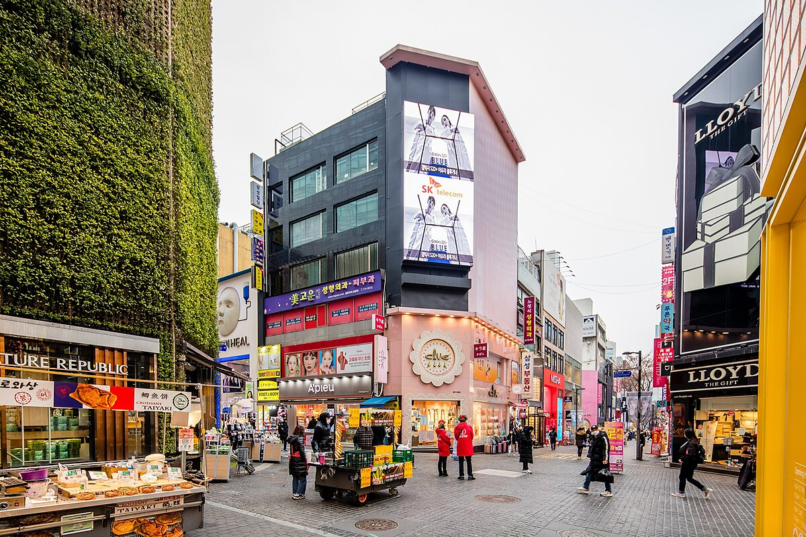
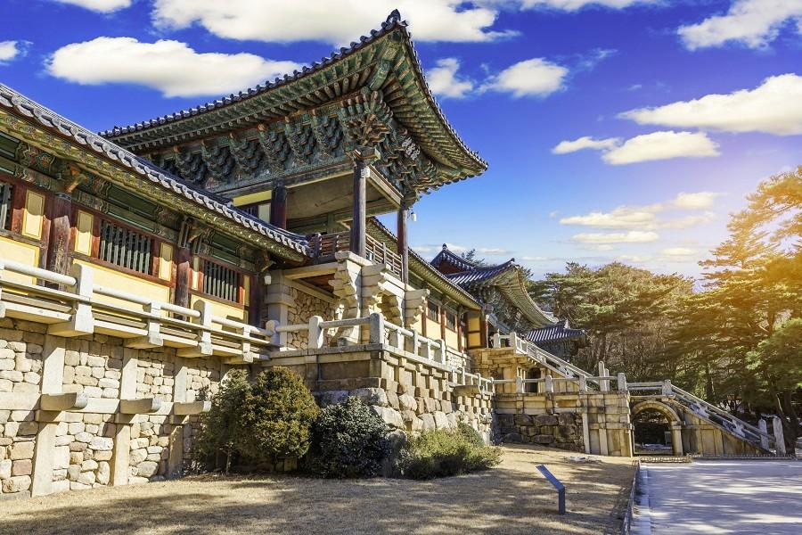
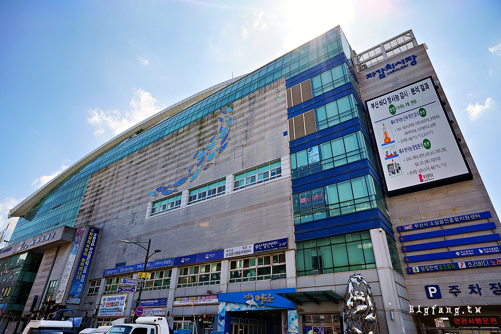
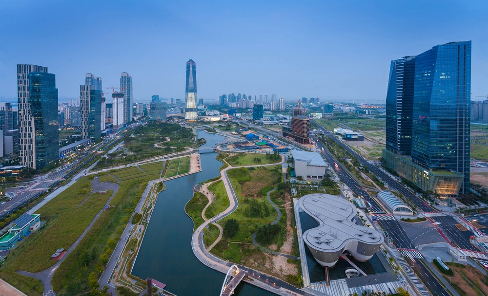

韓國
韓國景點
景福宮
這是朝鮮王朝時期的重要宮殿,擁有悠久的歷史和華麗的建築。遊客可以參觀王宮、觀賞換衛兵儀式等。
南山塔
位於南山頂上的觀景台,可俯瞰整個首爾市區景致。塔頂設有旋轉餐廳和纜車。
明洞
這裡是首爾最繁華的商業區,有大量服飾店、化妝品店、餐廳等。是購物和品嘗韓國美食的熱門場所。
弘大
以藝術和時尚聞名,擁有眾多酒吧、咖啡館、小型表演場地。是首爾年輕人聚集的熱點。
東大門
24小時營業的大型購物中心,有服裝批發市場和設計店店鋪。是夜晚人氣最旺的購物區之一。
仁寺洞
保留著韓國傳統文化的古老街區,有眾多畫廊、工藝品店和茶館。是遊覽韓國傳統文化的好去處。
清溪川
這條人工溪流流經市中心,夜晚璀璨的燈光吸引許多遊客。沿岸有公園和休憩區。
瞻星台
這是世界上現存最古老的天文台之一,建於7世紀,是了解古代天文科技的重要場所。
佛國寺
這座寺院建於8世紀,是韓國代表性佛教寺院之一。寺內有豐富的佛教藝術珍品。
石窟庵
位於佛國寺山腰,是一座岩石雕刻的庵堂,內有高度寫實的石雕大佛。
皇龍寺
是統一新羅時期最大的寺院遺址,曾有九層木塔,如今只剩下台基部分。
慶州塔

這是新羅時期遺留的石塔,是慶州地區最知名的標誌性建築之一。
櫻花園

每年春季,慶州的櫻花盛開,成為當地最美麗的景觀之一。
海雲台
這是韓國最著名的海灘之一,擁有長達 1.5 公里的白色沙灘和清澈的海水。夏季是遊客聚集的熱門景點。
龍頭山公園
位於釜山港口的龍頭山公園,園內有觀景台、韓戰紀念塔等景點。是俯瞰釜山港口全景的最佳地點。
甘川洞文化村
這個山坡上的小村落保存了韓戰時期的建築風格,如今成為藝術氣息濃厚的文化村。
西面
這裡是釜山最熱鬧的商業區,有眾多購物、餐飲、娛樂場所。是體驗釜山都市生活的最佳地方。
釜山塔
位於龍頭山公園內的觀景塔,可俯瞰整個釜山港口和城市景觀。
札嘎다리市場
韓國最大的海鮮市場,遊客可在此品嘗新鮮海產。
漢拏山
這是濟州島的最高峰,海拔1,950米。登山路線有多條,風景秀麗。是島上最知名的自然景觀。
城山日出峰
這是一座優美的火山口,每天日出時分都吸引大量遊客前來觀賞。
九月九日落池

這是濟州島最大的瀑布,洋溢著神秘的氛圍。
濟州島民俗村
這個開放式博物館展示了濟州傳統生活方式,有許多特色建築和手工藝品。
愛寶樂園
這是一個主題公園,以濟州島獨特的愛情文化為主題,有趣味性很強的雕塑作品。
松島
這裡的人造海島擁有美麗的海灘和現代化的建築風格,是仁川發展最快的地區之一。
開港歷史博物館
這個博物館介紹了仁川開港至今的歷史發展,值得一遊。
中華街
這裡是韓國最大的中國城,集中了各式中國特色餐廳和商店。